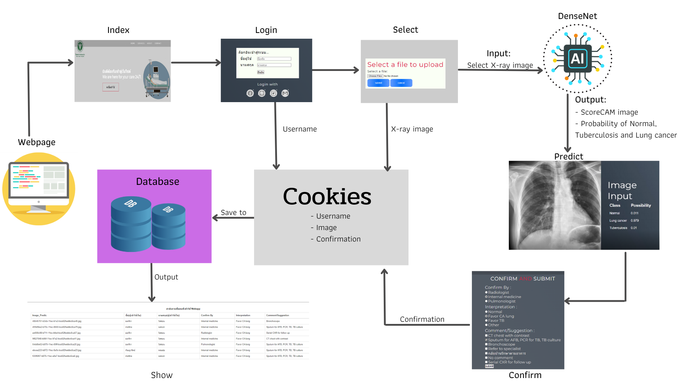

Chest X-Ray classification for tuberculosis and lung cancer
by machine learning algorithm

Example Results: Webpage(Prototype)
Abstract

Lung cancer and tuberculosis are some diseases with the highest death rates in Thailand. As reported in Khon Kaen, the disease control section determined that high epidemiological surveillance is required for tuberculosis. Additionally, in rural areas, the lacks of screening and diagnostic resources and specialists result in the problems of treatment accessibility and the long waiting time for treatment. This work aims to develop the deep learning model for chest X-Ray in tuberculosis and lung cancer. The 450 chest X-ray images, with three classes including tuberculosis, lung cancer and normal, were collected from Khon Kaen Hospital. Due to the limit of data availability, image enhancement techniques such as Rotation, Width shift, Height shift, Shear, and flip patterns are applied to aid the model in learning from various points of view. In this work, DenseNet201 and InceptionV3 are used as base classifiers. K-fold cross-validation criterion is used for model evaluation. Two classes and three classes classifications are investigated. For two classes classification, InceptionV3 outperforms DenseNet201 in terms of accuracy. The accuracies of InceptionV3 and DenseNet201 are 0.99 and 0.97, respectively. For three classes classification, DenseNet201 outperforms InceptionV3 in terms of accuracy. The accuracies of DenseNet201 and InceptionV3 are 0.91 and 0.88, respectively. For model interpretation, Score-CAM were used to highlight the crucial areas where models are focused in making decisions. Finally, the proposed model is deployed via the web application.
Installation :
1. pip install numpy
2. conda install opencv
3. pip install Flask
4. pip install tensorflow
5. pip install pandas
For the method of use is :
1. Install important packages into the terminal.
2. Download files and folders on the GitHub page.
3. Run .html, CSS, etc. via Flask with python flask.py(flask generated name).
4. Copy http://127.0.0.1:5000/ and paste it on the web page followed by the route of the page you want to display, e.g. http://127.0.0.1:5000/index.
5. Go to the application web page. You can see in the video it works fine for each device.
The website template was borrowed from Michaël Gharbi.